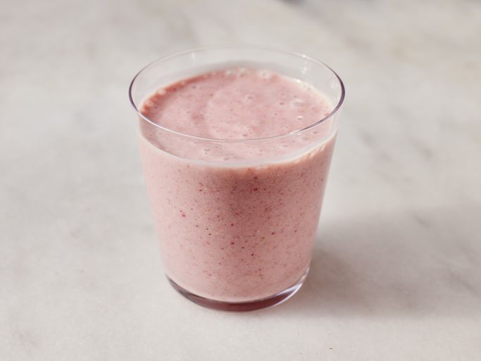

Home
Delicious Strawberry Oatmeal Smoothie

Description
This vegan oatmeal smoothie has a deep pink color and a rich, creamy texture. It's very filling, and perfect for people in a rush in the morning. You don't have to give up a good breakfast when it's this fast to make! I use vitamin fortified soy milk.
Ingredients
- 1 cup soy milk
- 1/2 cup rolled oats
- 14 frozen strawberries
- 1 banana, broken into chunks
- 1 1/2 teaspoons white sugar (Optional)
- 1/2 teaspoon vanilla extract (Optional)
Steps
-
Blend soy milk, oats, strawberries, and banana in a blender until smooth. Add sugar and vanilla and blend again until smooth.
-
Pour into glasses and serve.